The sketchiness of the marks comes from the geoms.
theme_sketch() styles the surrounding frame — typography,
gridlines, background — with a muted palette to match.
Light and dark presets
sales <- data.frame(product = c("Alpha", "Bravo", "Charlie", "Delta"),
units = c(34, 51, 22, 47))
ggplot(sales, aes(product, units, fill = product)) +
geom_sketch_col(seed = 1L, show.legend = FALSE) +
scale_fill_brewer(palette = "Set2") +
labs(title = "Light (paper) preset", x = NULL) +
theme_sketch()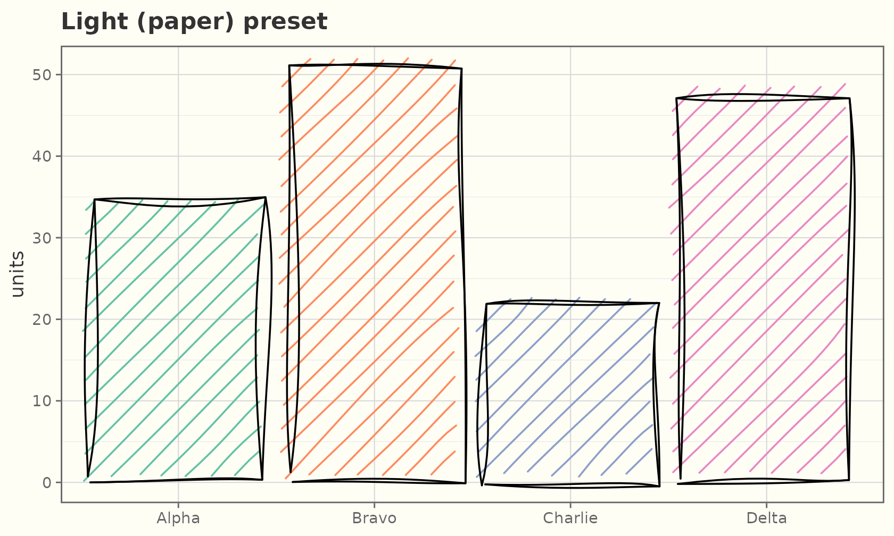
ggplot(sales, aes(product, units, fill = product)) +
geom_sketch_col(colour = "grey85", seed = 1L, show.legend = FALSE) +
scale_fill_brewer(palette = "Set2") +
labs(title = "Dark (chalkboard) preset", x = NULL) +
theme_sketch(dark = TRUE)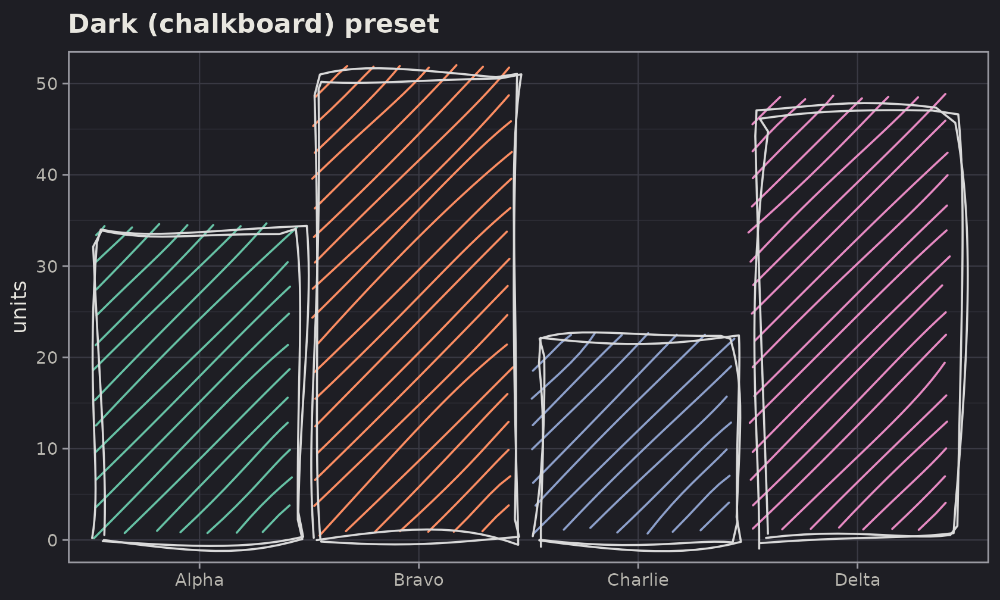
On a dark background, give the geoms a light outline
colour (e.g. "grey85") so the rough strokes
read clearly.
The sketch palette
scale_colour_sketch() / scale_fill_sketch()
apply a muted qualitative palette (sketch_palette()) tuned
for the hand-drawn look; the *_sketch_c() variants give a
continuous ink-on-paper gradient.
ggplot(mpg, aes(displ, hwy, colour = drv)) +
geom_sketch_point(size = 2.5, seed = 1L) +
scale_colour_sketch() +
labs(title = "scale_colour_sketch()") +
theme_sketch()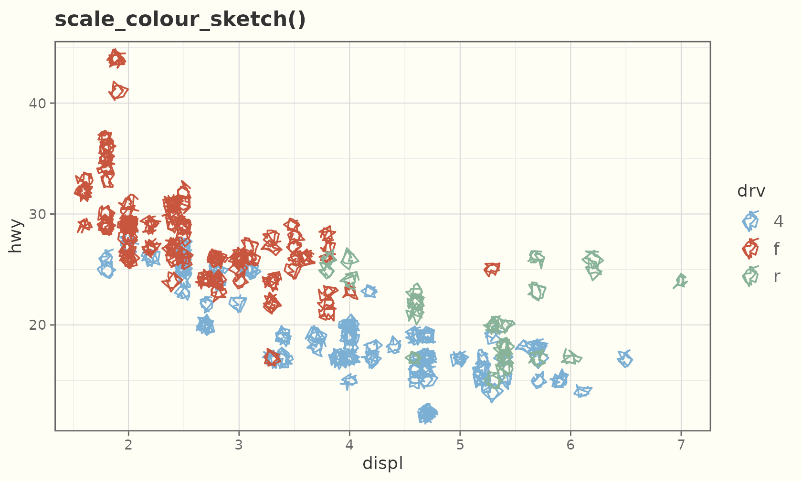
ggplot(faithful, aes(eruptions, waiting, colour = waiting)) +
geom_sketch_point(size = 2.5, seed = 1L) +
scale_colour_sketch_c() +
labs(title = "scale_colour_sketch_c()") +
theme_sketch()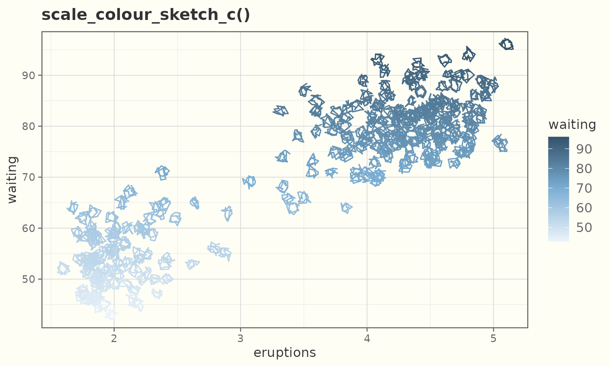
Textured paper
theme_sketch(paper = ) draws the panel on a textured
ground. sketch_papers() lists them; dark grounds
(blueprint, chalkboard) flip the text and grid to a light ink
automatically.
sketch_papers()
#> [1] "none" "notebook" "graph" "dotted" "aged"
#> [6] "blueprint" "chalkboard" "kraft"
ggplot(sales, aes(product, units, fill = product)) +
geom_sketch_col(seed = 1L, show.legend = FALSE) +
scale_fill_sketch() +
labs(title = "paper = \"notebook\"", x = NULL) +
theme_sketch(paper = "notebook")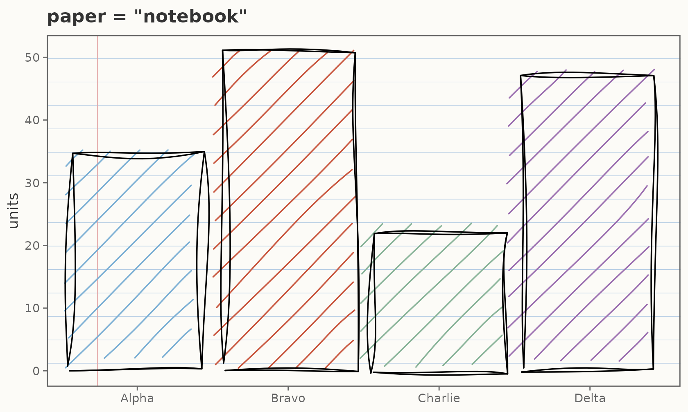
ggplot(mtcars, aes(wt, mpg)) +
geom_sketch_point(colour = "white", seed = 1L) +
labs(title = "paper = \"blueprint\"") +
theme_sketch(paper = "blueprint")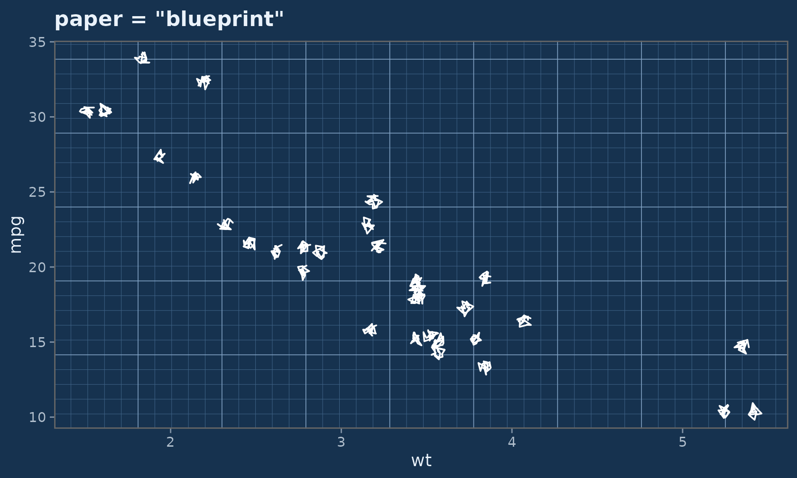
For finer control, drop a paper onto any single theme element with
element_sketch_paper():
ggplot(faithful, aes(eruptions, waiting)) +
geom_sketch_point(colour = "#1F618D", seed = 1L) +
theme_sketch() +
theme(panel.background = element_sketch_paper("graph"))
A hand-drawn frame
By default the gridlines, panel border, and ticks stay crisp.
rough_frame = TRUE roughens them to match the marks:
ggplot(sales, aes(product, units)) +
geom_sketch_col(fill = "#7BAFD4", seed = 1L) +
labs(title = "rough_frame = TRUE", x = NULL) +
theme_sketch(rough_frame = TRUE, seed = 1L)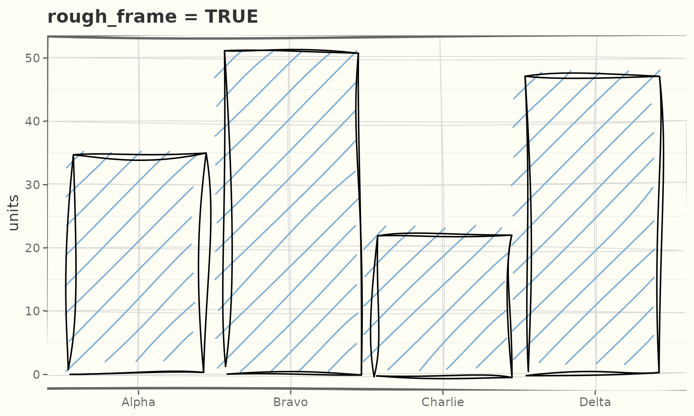
Those are real theme elements — element_sketch_line()
and element_sketch_rect() — so you can roughen individual
elements and tune their roughness, bowing, and
seed:
ggplot(mtcars, aes(wt, mpg)) +
geom_sketch_point(seed = 1L) +
theme_sketch() +
theme(
panel.grid.major = element_sketch_line(roughness = 0.8, seed = 7L),
axis.ticks = element_sketch_line(roughness = 0.6, seed = 8L)
)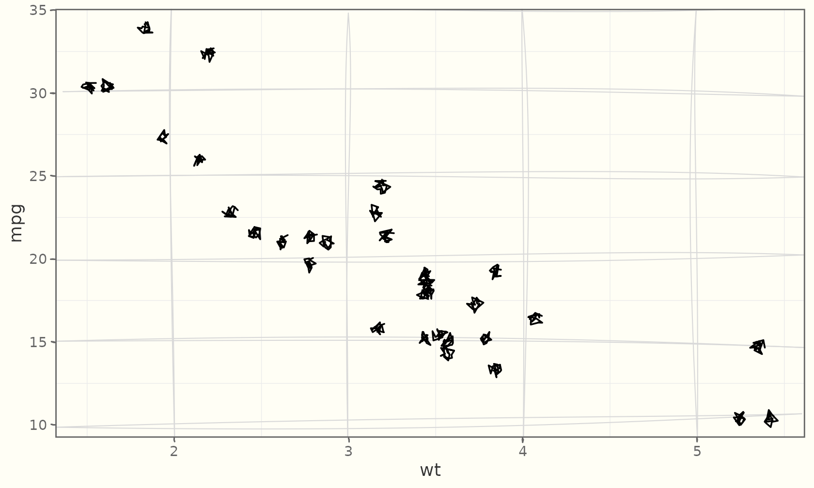
coord_sketch() roughens the frame under any
theme — even a non-sketch one — and coord_sketch_polar()
does the same for circular plots:
ggplot(mtcars, aes(wt, mpg)) +
geom_sketch_point(seed = 1L) +
labs(title = "coord_sketch() under theme_bw()") +
coord_sketch(seed = 1L) +
theme_bw()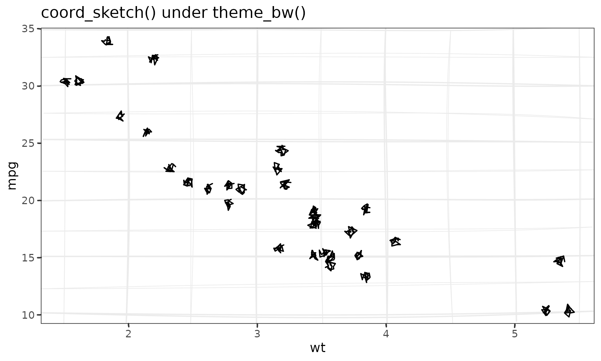
rose <- data.frame(g = c("a", "b", "c", "d", "e", "f"), v = c(3, 5, 2, 4, 6, 3))
ggplot(rose, aes(g, v, fill = g)) +
geom_sketch_col(seed = 1L, show.legend = FALSE) +
scale_fill_sketch() +
coord_sketch_polar(seed = 1L) +
labs(title = "coord_sketch_polar()", x = NULL, y = NULL) +
theme_sketch()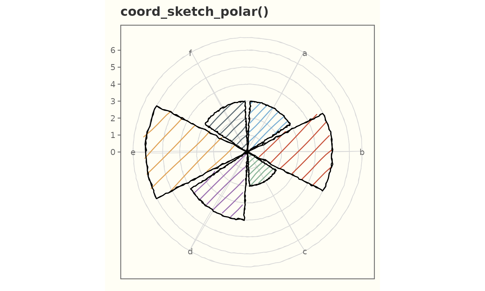
Base size and the rest of the grammar
theme_sketch() is a normal ggplot2 theme — combine and
override freely.
ggplot(mtcars, aes(wt, mpg)) +
geom_sketch_point(size = 3, seed = 1L) +
labs(title = "Bigger base text", subtitle = "theme_sketch(base_size = 15)") +
theme_sketch(base_size = 15) +
theme(panel.grid.minor = element_blank())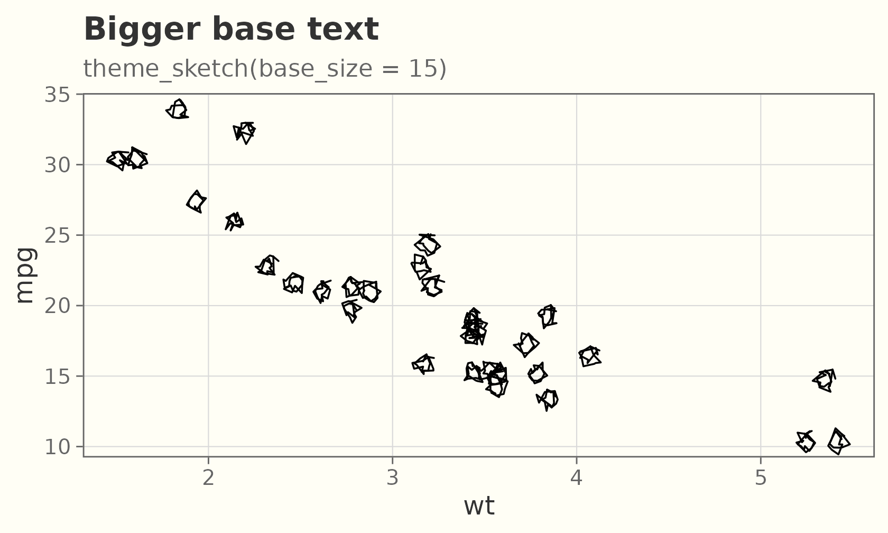
Handwriting fonts (optional)
The look does not depend on fonts, but a handwriting
face for the text adds to it. Pass a family name to
base_family, or use "auto" to pick the first
installed handwriting font (falling back to the device default if none
are found).
What they look like
A few handwriting faces that pair well with the geoms — Google Fonts like Caveat, Permanent Marker, and Indie Flower, plus the handwriting fonts that ship with Windows and macOS (Segoe Print, Ink Free, Bradley Hand, Chalkboard, Comic Sans MS). The specimen below renders whichever of those are installed on the build machine.
No handwriting fonts were found on the build machine, so the specimen is skipped. Install one of the faces above (or register one — see below) to see it here.
Using one
Pass base_family = "auto" to style the whole theme with
the first installed handwriting font; geom_sketch_text()
picks it up the same way.
ggplot(sales, aes(product, units)) +
geom_sketch_col(fill = "#7BAFD4", seed = 1L) +
geom_sketch_text(aes(label = units), nudge_y = 2.5, size = 6) +
labs(title = "base_family = \"auto\"", x = NULL) +
theme_sketch(base_family = "auto")Check what is available on your machine:
ggsketch_check_fonts()
#> Available handwriting fonts:
#> CaveatReproducible fonts
To get the same face on any machine or CI runner — without
relying on a system install — download a font once (e.g. Caveat from
Google Fonts) and register it with register_sketch_font(),
then render with a font-aware device (ragg, svglite, cairo):
register_sketch_font("Caveat", "~/fonts/Caveat-Regular.ttf")
ggplot(sales, aes(product, units)) +
geom_sketch_col(fill = "#7BAFD4", seed = 1L) +
geom_sketch_text(aes(label = units), family = "Caveat", nudge_y = 2.5, size = 6) +
labs(title = "Registered font", x = NULL) +
theme_sketch(base_family = "Caveat")ggsketch_check_fonts() and
register_sketch_font() need the optional
systemfonts package; without it (or without any handwriting
font), everything still renders with the device default — ggsketch never
makes fonts a hard dependency.